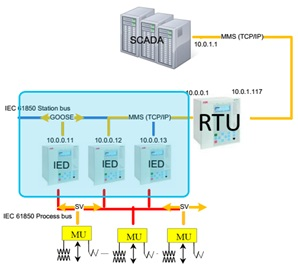
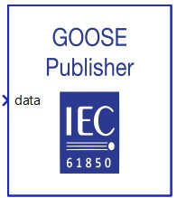
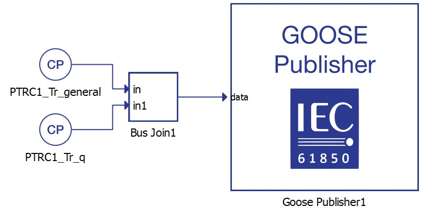
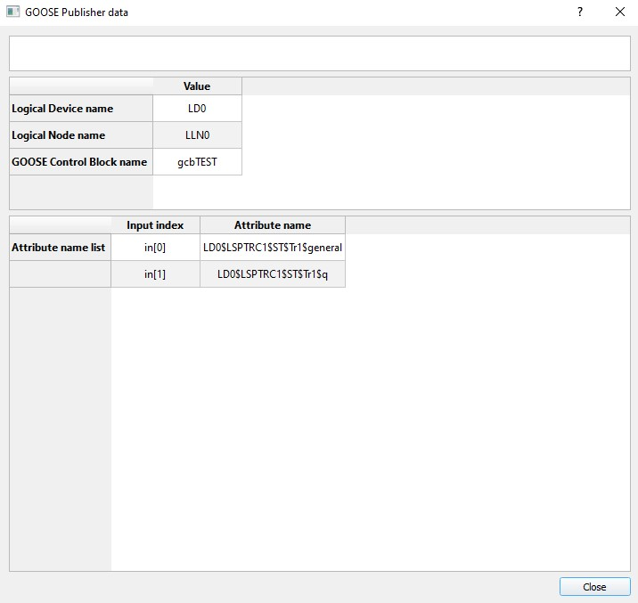
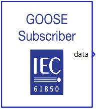
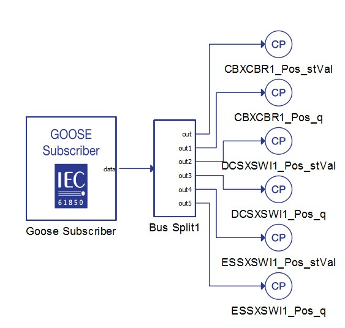
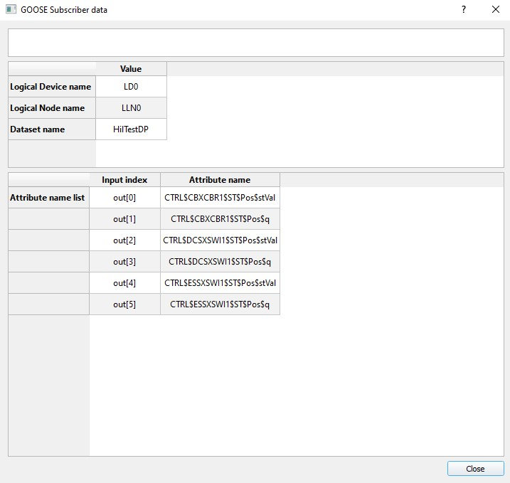

IEC 61850 GOOSE protocol
Description of the IEC 61850 GOOSE protocol implementation in the Typhoon HIL toolchain.
IEC 61850 GOOSE protocol
IEC 61850 (IEC 61850 – Communication Networks and Systems in Substations) standard defines GOOSE protocol (Generic Object Oriented Substation Event) as a publisher/subscriber type communication. This protocol is used for information exchange between IEDs (IED – Intelligent Electronic Device) in a Substation over the Ethernet.
IEC 61850 defines a special XML based language used for describing a substation and substation elements called SCL (Substation Configuration Language). Different levels of substations can be described using this language, so different files can exist, such as:
- ICD (IED Capability Description) – it defines the complete capability of IED
- SSD (System Specification Description) – it contains complete specification of a substation automation system, including single line diagram for the substation and its functionalities (logical nodes)
- SCD (Substation Configuration Description) – it describes complete substation details. It contains substation, communication, IED and Data type template sections.

GOOSE protocol is an event-based protocol. The concept of GOOSE communication is that the publisher periodically sends messages and when an event happens (ex. Trip, Contactor closed …), it sends a burst of messages with new data. Because the protocol is publisher/subscriber based, there is no confirmation that the sent message is correctly received by the subscriber, so the message burst minimalizes the chance of message loss.
All messages are published under a topic. The subscriber receives all messages from the system, but filters and parses only the messages sent within the subscribed topic.
Since the GOOSE protocol is publisher/subscriber based, communication is possible only inside the local network (LAN).
In the Typhoon HIL toolchain, GOOSE protocol is supported by the following devices: HIL402, HIL101, HIL404, HIL602+, HIL604, HIL506, and HIL606.
GOOSE Publisher

- Ethernet port
- Choose the Ethernet port through which the GOOSE signal will be sent.
- Path to configuration file
- Specifies the file system path to the selected configuration file.
- Choose
- Clicking Choose opens a file browser to select a configuration file. The selected file is then used to configure the GOOSE Publisher component, defining the Publisher device.
- IED
- When the GOOSE file is properly formatted, all extracted IEDs are displayed in the combobox for selection.
- GOOSE Control Block
- When the GOOSE file is properly formatted, all extracted GOOSE Control Blocks are displayed in the combobox for selection.
- Data preview
- Available when GOOSE file is uploaded.
- It opens a window displaying a description of the GOOSE Publisher data.
- Simulate
- If the Simulate checkbox is selected, a new port called simulate will appear on the component through which the simulation bit can be changed during simulation.
- This bit indicates that the Publisher message is sent by a test device. This flag helps the Subscriber to distinguish whether the received values are real values or simulated test values.
- Enable VLAN tagging
- Choose whether VLAN tagging is enabled for the Ethernet frame.
- When enabled, outgoing frames include a VLAN tag, when disabled, frames are transmitted untagged.
- VLAN priority
- Available when the Enable VLAN tagging option is selected.
- Defines the priority level used for Quality of Service.
- By default, the value is taken from the configuration file, but it can be modified.
- VLAN ID
- Available when the Enable VLAN tagging option is selected.
- Defines the VLAN identifier applied to tagged frames.
- By default, the value is taken from the configuration file, but it can be modified.
- Execution rate
- Signal processing execution rate. Execution rate must match with the other components used in the model.
The GOOSE Publisher component is configured by importing a file that describes the Publisher device. If the file is properly formatted, the GOOSE publisher data is processed and extracted. Use the IEDs and GOOSE Control Block properties to select the data set to be sent.
The Ethernet port property defines which ethernet port on the back of the HIL device will be used by the GOOSE Publisher application. For 4th generation devices (HIL101, HIL404, HIL506, and HIL606), any available port can be used for communication, while older devices only support communication over port 1.
Selecting GOOSE Control Block
GOOSE Publisher signal processing block has only one input terminal that can be either scalar or vector. The signal size of this input terminal is defined through configuration file, specifically through the GOOSE Data Set information (Figure 3). GOOSE Data Set specifies what data parameters are sent via GOOSE message.
If the signal size of the input terminal is vector, signal should be fed to GOOSE Publisher block through Bus Join component. Bus Join concatenates signals into vector. The order in which the data is concatenated into vector needs to be the same as the order they appear in GOOSE Data Set information. This information is available by clicking the Data preview button in component property window once the configuration is successfully loaded. This is illustrated in Figure 3.


It is important to emphasize that there can exist more than one GOOSE Publisher block inside the model and GOOSE Control Blocks can be defined through different configuration files.
To successfully establish GOOSE communication, all devices communicating through GOOSE messages must be connected to the same network.
GOOSE Subscriber

- Ethernet port
- Choose the Ethernet port through which the GOOSE signal will be received.
- Path to configuration file
- Specifies the file system path to the selected configuration file.
- Choose
- Clicking Choose opens a file browser to select a configuration file.The selected file is then used to configure the GOOSE Subscriber component, defining the Subscriber device.
- IED
- When the GOOSE file is properly formatted, all extracted IEDs are displayed in the combobox for selection.
- Data set name
- When the GOOSE file is properly formatted, all extracted Data set names are displayed in the combobox for selection.
- Data preview
- Available when GOOSE file is uploaded.
- It opens a window displaying a description of the GOOSE Subscriber data.
- Output Simulate
- If the Output Simulate checkbox is selected, a new port called simulate will appear on the component through which the simulation bit can be read during simulation.
- This bit helps the Subscriber to distinguish whether the received values are real values or simulated test values.
- Enable VLAN tagging
- Defines whether the Subscriber expects incoming Ethernet frames to be VLAN-tagged.
- When enabled, only incoming frames with a VLAN tag and a matching VLAN ID are received, when disabled, only incoming frames without a VLAN tag are received.
- VLAN ID
- Available when the Enable VLAN tagging option is selected.
- Specifies the VLAN ID that the Subscriber expects in incoming VLAN-tagged messages. Only incoming messages with this VLAN ID will be processed.
- By default, the value is taken from the configuration file, but it can be modified.
- Execution rate
- Signal processing execution rate. Execution rate must match with the other components used in the model.
The GOOSE Subscriber component is configured by importing a file that describes the Subscriber device. If the file is properly formatted, the GOOSE subscriber data will be processed and extracted. Use the IED and Data set name properties to select the data set to be received.
The Ethernet port property defines which ethernet port on the back of the HIL device will be used by the GOOSE Subscriber application. For 4th generation devices (HIL101, HIL404, HIL506, and HIL606), any available port can be used for communication, while older devices only support communication over port 1.
Selecting GOOSE Data Set
GOOSE Subscriber signal processing block has only one output terminal that can be either scalar or vector. The signal size of this input terminal is defined by the configuration file, specifically by the selected GOOSE Data Set information. GOOSE Data Set specifies what data parameters are received via GOOSE message.
If the input signal is a vector it should be split into scalars using Bus Split component. The order in which the data is sorted on the output of Bus Split is the same as the order it appears in GOOSE Data Set information. This is illustrated in Figure 5.


It is important to emphasize that there can exist more than one GOOSE Subscriber block inside the model and GOOSE Data Sets can be defined through different configuration files.
To successfully establish GOOSE communication, all devices communicating through GOOSE messages must be connected to the same network.
Time synchronization
If there is a need for time synchronization, please take a look at Time synchronization.
Changing GOOSE protocol values using Schematic API
The component dialog is designed to easily pick the GOOSE protocol inputs and outputs. Changing these values is also possible using standard Schematic API functions. To illustrate this, a code example is included below. This code shows how Schematic API can be used to automatically edit and compile a hypothetical user-made model with MODEL_NAME "goose_example.tse" and user-defined GOOSE_SETTING_FILE "goose1.scd".
Example usage: from typhoon.api.schematic_editor import model
# load model
MODEL_NAME = "goose_example.tse"
model.load(MODEL_PATH)
#configuration files
GOOSE_SETTING_FILE = "goose1.scd"
config_data = [("AA1J1Q01A1", "LD0/LLN0.gcbCB1pos", 2, "LD0/LLN0.CB1pos")]
config_tuple = config_data[0]
# ("IED", "GOOSE Control Block", Data Set dimension, "Data set name")
ied = config_tuple[0]
gooseCB = config_tuple[1]
data_set_dimension = config_tuple[2]
data_set = config_tuple[3]
#component position variables
x = 200
y = 200
# execution_rate
Ts = 200e-6
publisher = model.create_component(type_name="core/GOOSE Publisher", name=("GOOSE Publisher" ), position=(x + 100, y))
model.set_component_property(component=("GOOSE Publisher"), property="configuration", value=GOOSE_SETTING_FILE)
model.set_component_property(component=("GOOSE Publisher"), property="ied", value=ied)
model.set_component_property(component=("GOOSE Publisher"), property="gooseCB", value=gooseCB)
#Automatically create and connect Scada inputs for succesfull compilation
#No code edits needed- defined by the configuration file and component position variables
bus_join_i = model.create_component(type_name="core/Bus Join", name = ("Bus Join"), position = (x, y))
model.set_component_property(component = ("Bus Join"), property = "inputs", value = data_set_dimension)
model.create_connection(start = model.term(comp_handle=bus_join_i, term_name="out"), end=model.term(comp_handle=publisher, term_name="data"))
for j in range(data_set_dimension):
input_i = model.create_component(type_name="core/SCADA Input", name=("Input" + str(j)), position=(x - 100, y + j*56))
model.set_component_property(component = ("Input" + str(j)), property = "execution_rate", value = Ts)
if j != 0:
model.create_connection(start=model.term(comp_handle=input_i, term_name="out"), end=model.term(comp_handle=bus_join_i, term_name=("in" + str (j))))
else:
model.create_connection(start=model.term(comp_handle=input_i, term_name="out"), end=model.term(comp_handle=bus_join_i, term_name="in"))
#Automatically create and setup the Subscriber component
#No code edits needed- defined by the configuration file and component position variables
subscriber = model.create_component(type_name="core/GOOSE Subscriber", name=("GOOSE Subscriber" ), position=(x + 400, y * 300))
model.set_component_property(component=("GOOSE Subscriber"), property="configuration", value=GOOSE_SETTING_FILE)
model.set_component_property(component=("GOOSE Subscriber"), property="ied", value=ied)
model.set_component_property(component=("GOOSE Subscriber"), property="data_set", value=data_set)
model.set_component_property(component=("GOOSE Subscriber"), property="execution_rate", value=Ts)
#Automatically create the output Probes for succesfull compilation
#No code edits needed- defined by the configuration file and component position variables
probe_i = model.create_component(type_name="core/Probe", name = ("Probe"), position = (x + 500 , y * 300))
model.create_connection(start=model.term(comp_handle=probe_i, term_name="in"), end=model.term(comp_handle=subscriber, term_name="data"))
#model compile
model.compile()Virtual HIL support
Virtual HIL currently does not support this protocol. When using a non-real-time environment (e.g. when running the model on a local computer), inputs to this component will be discarded and outputs from this component will be zeroed.